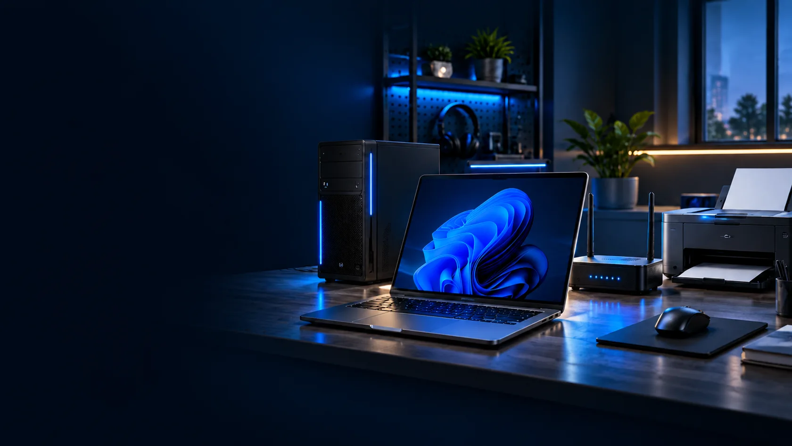
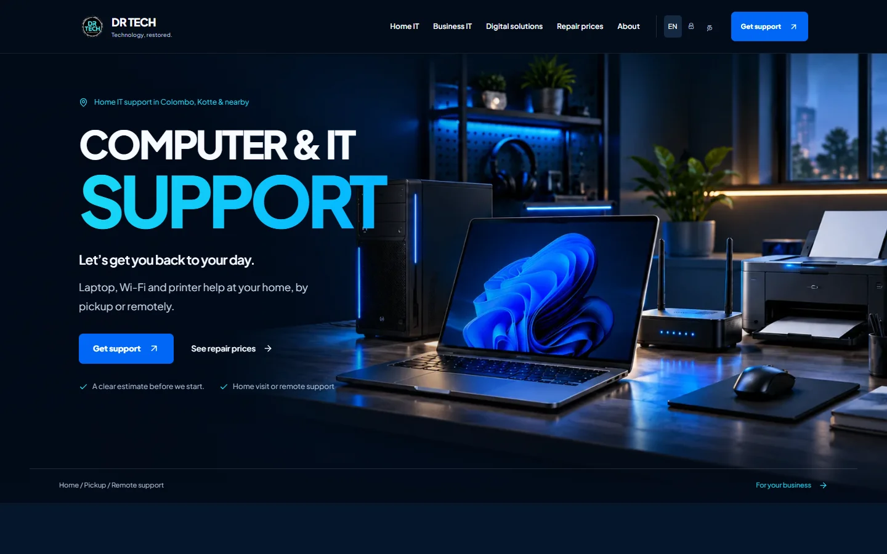

01
Laptop & desktop repairs
Not starting, overheating or damaged hardware? Let’s diagnose the cause.
- Startup and performance problems
- Screen, battery and hardware issues
- Repair options explained before work
IT SUPPORT FOR HOMES & SRI LANKAN BUSINESSES
From a laptop that won’t start to a business ready to grow. Get practical repairs, reliable IT support and digital solutions from one local partner.

Explore our services below or contact us for help.
Computer, Wi-Fi, printer and software help.
Office IT, websites, business software and support.
REPAIRS & EVERYDAY IT SUPPORT
Tell us what’s wrong and where you are. We’ll discuss the right service, an estimate and whether a visit, pickup or remote session makes sense.
Not starting, overheating or damaged hardware? Let’s diagnose the cause.
Give your existing computer a useful second life.
Improve the connection around your home or workspace.
Get your printer and everyday accessories working together.
Sort everyday software problems and protect important files.
Discuss the options for a drive or device with missing files.
A LOCAL SERVICE. EXPERIENCED HANDS.
DR TECH is founded by Deepal Rupasinghe, bringing more than 12 years of enterprise IT experience across retail, FMCG and pharmaceuticals to homes and small businesses.
That experience includes Microsoft 365, Azure, networks, device management and backup planning. You get a clear explanation of the issue and practical advice on what to do next.
IT SOLUTIONS FOR SMALL & GROWING BUSINESSES
For shops, offices, cafés and service businesses. Build a dependable setup, support your team and choose tools that make everyday work easier.
Connect staff, printers and devices with a network designed around your premises.
Office LAN and Wi-Fi · Multi-site connectivity · TroubleshootingDiscuss your requirementsSet up business email and collaboration tools, with access that fits your team.
Email · Teams and SharePoint · Cloud and user administrationDiscuss your requirementsReduce avoidable disruption with sensible backup, access and endpoint practices.
Backup planning · Device management · Access and security reviewsDiscuss your requirementsHelp customers understand your services, view your work and contact you.
Business websites · Mobile-friendly layouts · Enquiry flowsDiscuss your requirementsDiscuss systems and reporting that suit the way your business operates.
Odoo support · Dashboards · Workflow and reporting toolsDiscuss your requirementsHave a practical partner for maintenance, troubleshooting and planned improvements.
On-site and remote support · Maintenance · Vendor coordinationDiscuss your requirementsPRICES & SUPPORT PLANS
Choose a one-off service or discuss ongoing support. Final scope and pricing are agreed after understanding your device or business.
Device check and issue diagnosis
LKR 1,500–2,500Startup and junk cleanup
LKR 3,500–7,500Setup and connection troubleshooting
LKR 2,500–5,000Windows, email and backup support
LKR 3,500–6,500Indicative service prices. Travel, repair time and replacement parts may change the estimate. We confirm the scope before work begins.
STARTER
Essential maintenance for a very small business with a simple setup.
Discuss StarterGROWTH
More regular support for growing shops, offices, cafés and tuition classes.
Discuss GrowthPRO
Discuss priority support and broader coverage for more devices and critical systems.
Discuss ProDevice coverage, visits and response times are agreed after reviewing your requirements. Plan prices are starting points for that discussion.
HOW IT WORKS
Send the device or business requirement, the issue and your location.
Discuss the work, estimate and a visit, pickup or remote session.
Receive practical support and recommendations for what comes next.
EXPERIENCE & DIGITAL WORK
A look at Deepal’s infrastructure experience and the software work behind DR TECH.
Designed and implemented by Deepal, connecting business locations and devices.
View professional experience ↗A project exploring AI-assisted analysis of business data. Ask about its current scope and progress.
Explore the project ↗
Service discovery and customer enquiry flows. Preview shown: the earlier DR TECH interface.
View current drtech.lk ↗BEFORE YOU GET IN TOUCH
Still unsure? Describe the issue on WhatsApp and we’ll help you decide where to start.
Ask your questionDR TECH serves Colombo, Kotte and nearby areas. Share your location so we can confirm travel arrangements. Remote support may be suitable for some issues.
Home and office visits, pickup and remote support are available depending on the work. Contact us to agree on the best option and timing.
We discuss the scope and estimate before starting. Travel, replacement parts and repair time can affect the final price.
Yes. Tell us about your team, locations and devices. We can discuss a support plan and agree coverage, visits and response times.
Yes. We can discuss a business website, Odoo support, dashboards or practical business tools. The scope and quote depend on your requirements.
Recovery depends on the condition of the storage device and what happened to it. Contact us to discuss an assessment; recovery cannot be guaranteed.
LET’S TALK ABOUT WHAT YOU NEED
Contact Deepal at DR TECH Services for personal repairs or your next business IT improvement.
CALL DR TECH076 084 6996EMAILdrtechservicelk@gmail.comColombo, Kotte & nearby areas
Prefer a quick message? Open WhatsApp